Week 3: Positionality and reflection on tech demos (own & peers)
Description
This week’s focus was on presentations and reflection. I gave my own tech demo on the topic of “Introduction to 3D Modeling.” During the presentation, I explained what 3D modeling is, introduced Blender, showed some examples of 3D work, and walked through my own modeling practice process. I also demonstrated how my idea evolved from the inspiration of a crystal ball into a miniature world inside a glass bottle. My presentation covered the bottle exercise, the element exercise, the lighting and rendering process, the final model, Blender’s basic interface and operations, and some tips suitable for beginners. Additionally, I included a QR code for a tutorial video so that classmates could continue learning about the tool after the presentation.
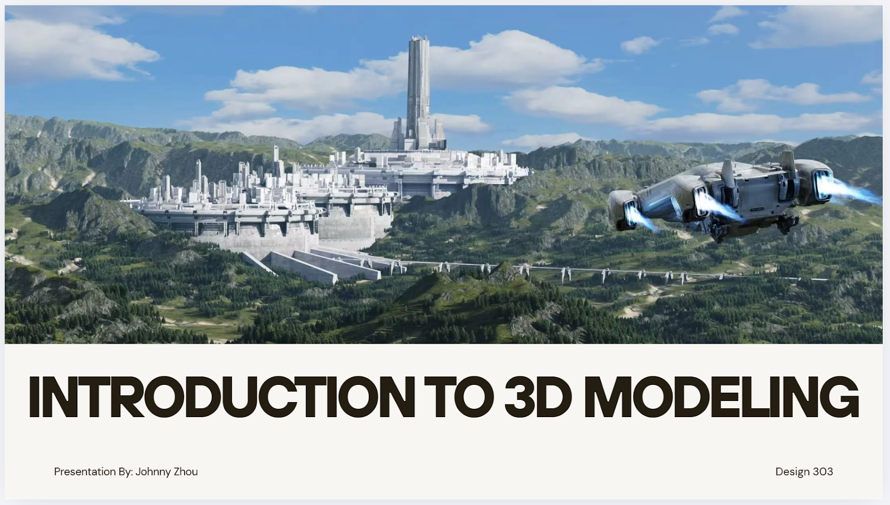
In addition to my own presentation, I also listened to the tech demos given by other team members and took notes. The topics I noted included UX and UI, Minecraft as a platform for creativity and architectural design, image editing and theme creation, and Figma. From these notes, I could see that each team member explained the technology in a different way: some focused more on concepts and relationships, while others emphasized practical examples, software usage, or interactive exercises with the audience.
So, this week isn’t just about showcasing my own work; it’s also about comparing different presentation styles, reflecting on what kinds of demos are most helpful, and giving more serious thought to my role as a learner and design student.
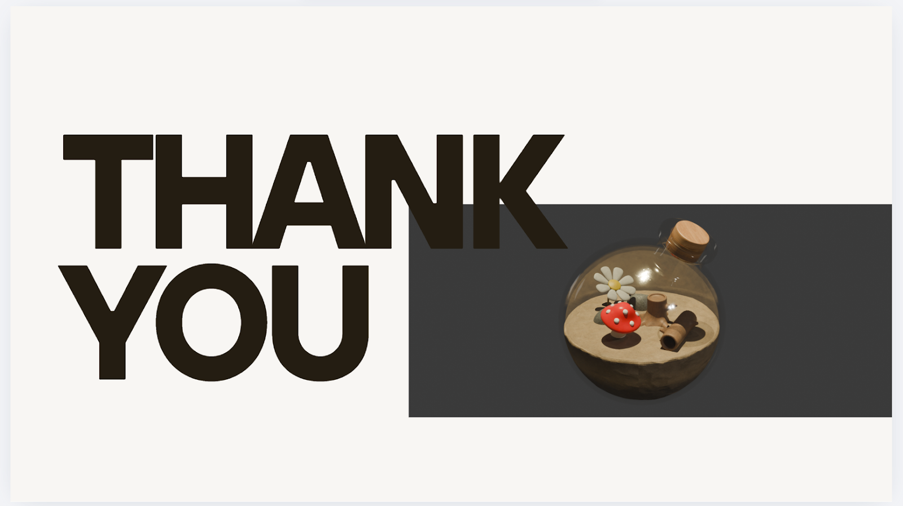
Feelings
I was actually a little nervous before the presentation. Even though my PowerPoint was ready, I still wasn’t sure if I could explain the content clearly in front of an audience. Since my topic covered both design concepts and technical processes, I was worried that I might either say too much or not explain things clearly enough.
I began to relax a little more when I started talking about my own project. Showing my model was a huge help because it meant I wasn’t just talking about theory — I had something concrete and visual to rely on, which also helped me relax.
After listening to the other group members’ presentations, I found them both interesting and somewhat thought-provoking and challenging. Some members’ presentations were very straightforward and easy to follow, especially when they clearly explained the relationship between their ideas and the tools they used. This prompted me to take a closer look at my own presentation and consider whether my key points were clear enough.
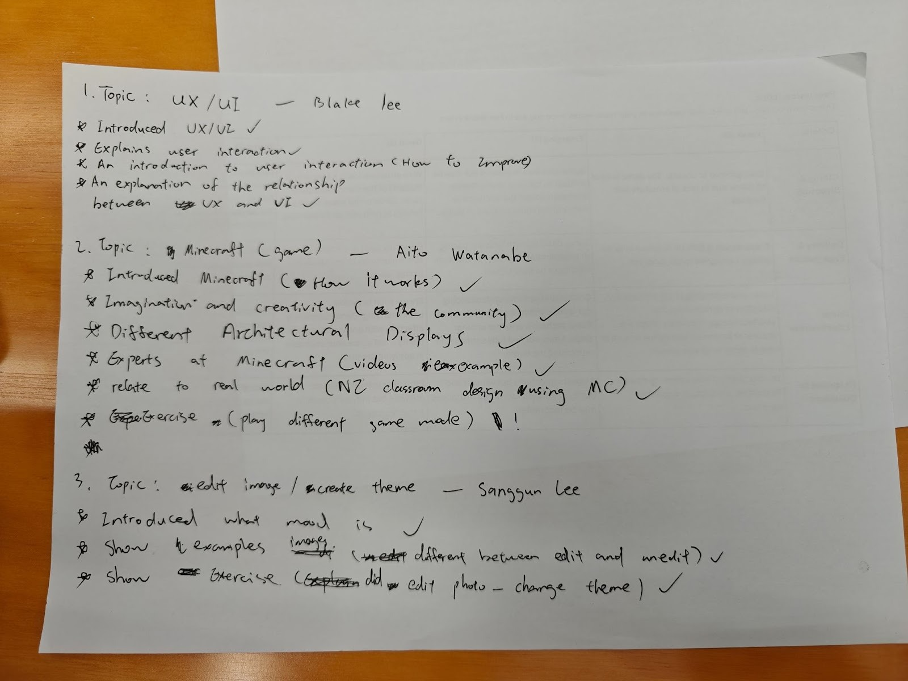
Evaluation
One of the strengths of my presentation was that I used my own creative process as an example. Rather than simply introducing Blender as a piece of software, I demonstrated how I used it to turn an idea into a model. My presentation didn’t just cover 3D modeling and the basics of Blender; it also included the entire process from inspiration to the final render. I think this made the demo feel more authentic and useful.
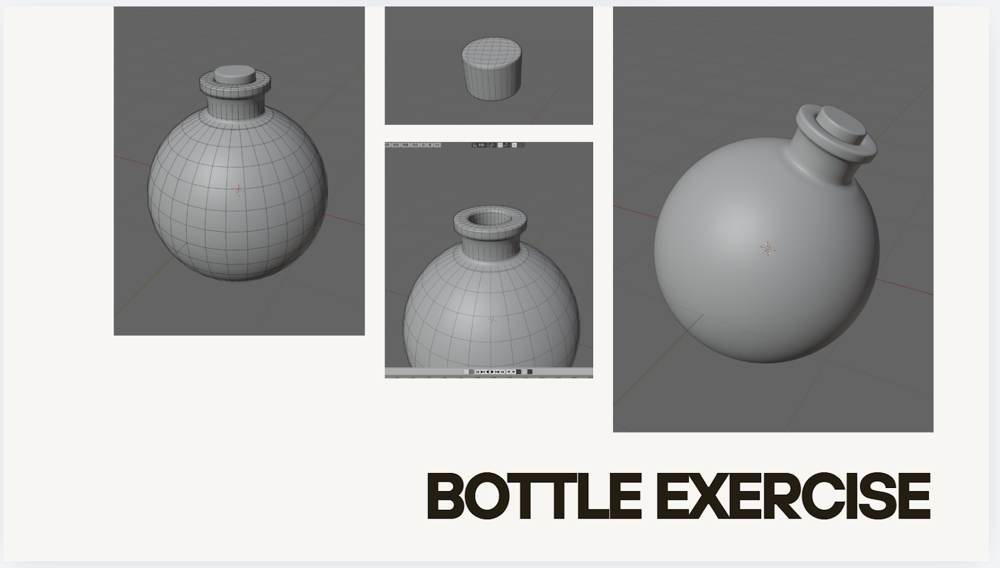
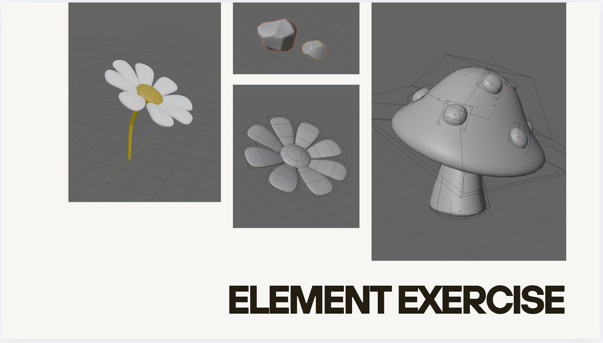
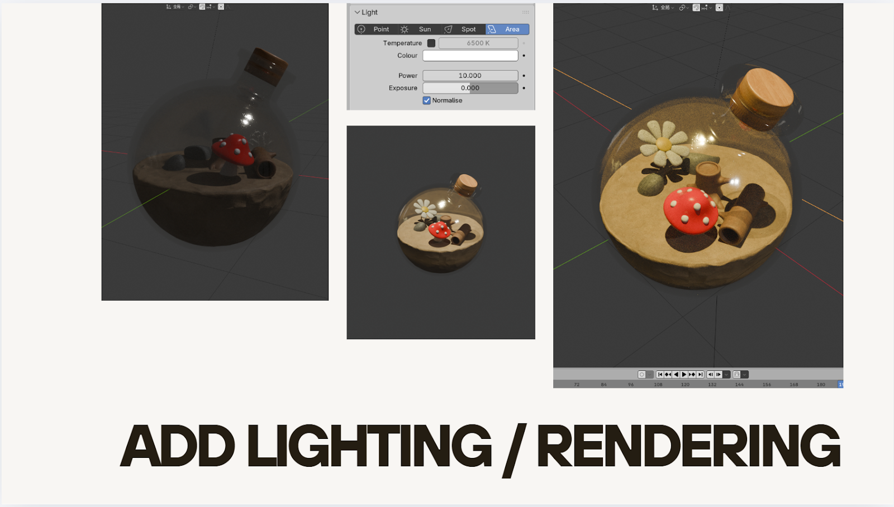
Another advantage is that my topic is directly related to my own design interests. Since I’m genuinely interested in 3D modeling, I can explain why I want to learn it and why I think it’s meaningful for design expression. This makes my presentation more personal, rather than just a standard software overview.
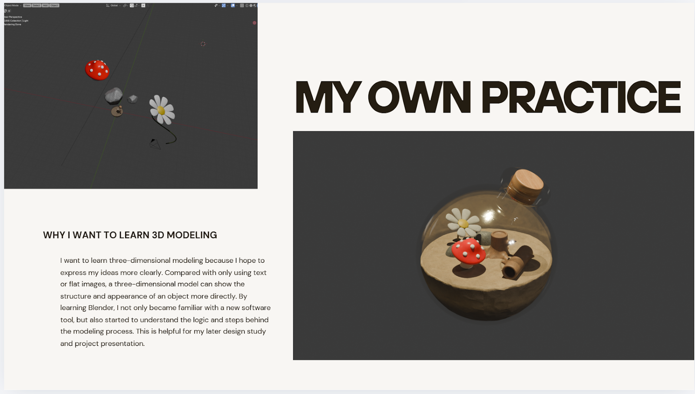
This presentation had its shortcomings as well. Looking back, I feel I included a bit too much content. I covered the background, use cases, examples, my own process, the interface, operations, and tips. Although these topics are interconnected, they may have been a bit too much for a short demo. I think I could have narrowed down the actual focus of the presentation even further.
From the presentations given by other team members, I also noticed that a strong demo usually has a very clear takeaway. For example, in my notes, the UX/UI presentation clearly explained the relationship between UX and UI; the Figma presentation explained what the tool is, how to use it, and its connection to user needs. The Minecraft presentation also made a deep impression by connecting the software to creativity, architecture, community, and even real-world classroom design. These examples made me realize that clarity and focus are just as important as the amount of content.
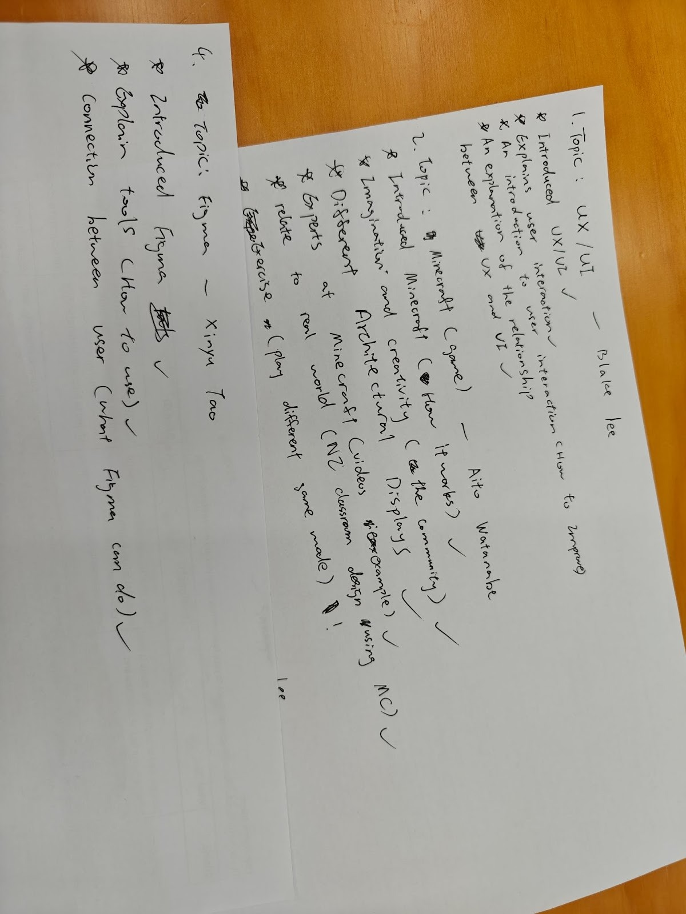
Analysis
This week has prompted me to reflect more deeply on positionality. I realize that I need to consider who I am, the relationship between myself and the tools I use, the context in which I share my knowledge, and how I engage with my audience. For me, I’m not speaking as a professional 3D artist, but rather as a learner who is still mastering Blender and has gradually accumulated some experience — someone sharing a relatively accessible starting point with others.
But in reality, this positionality affects my presentation. Since I still see myself as a learner, I naturally place more emphasis on content suitable for beginners — such as what Blender is, what the interface is for, and what the most basic operations are. I also used my own projects as examples, because they reflect my actual learning process rather than a highly professional, flawless end result. This makes the talk more authentic, but it also means I sometimes stay on a broader, safer level rather than delving into specific technical details. However, this approach has its advantages: it allows me to provide better guidance for beginners.
After watching my classmates’ presentations, this became even clearer. As my notes show, each presenter’s background and comfort zone influenced their demo. The UX/UI presentation focused on explaining relationships and how to improve user interaction. The Minecraft presentation emphasized creativity, community, architecture, and real-world applications. The image editing presentation highlighted examples and the differences between edited and unedited versions, while the Figma presentation focused more on the practical use of the tool and its connection to users. This made me realize that every tech demo reflects not only the topic itself but also the presenter’s own perspective, strengths, and design priorities.
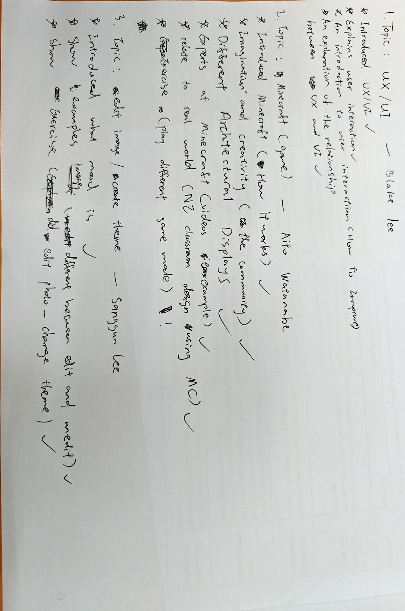
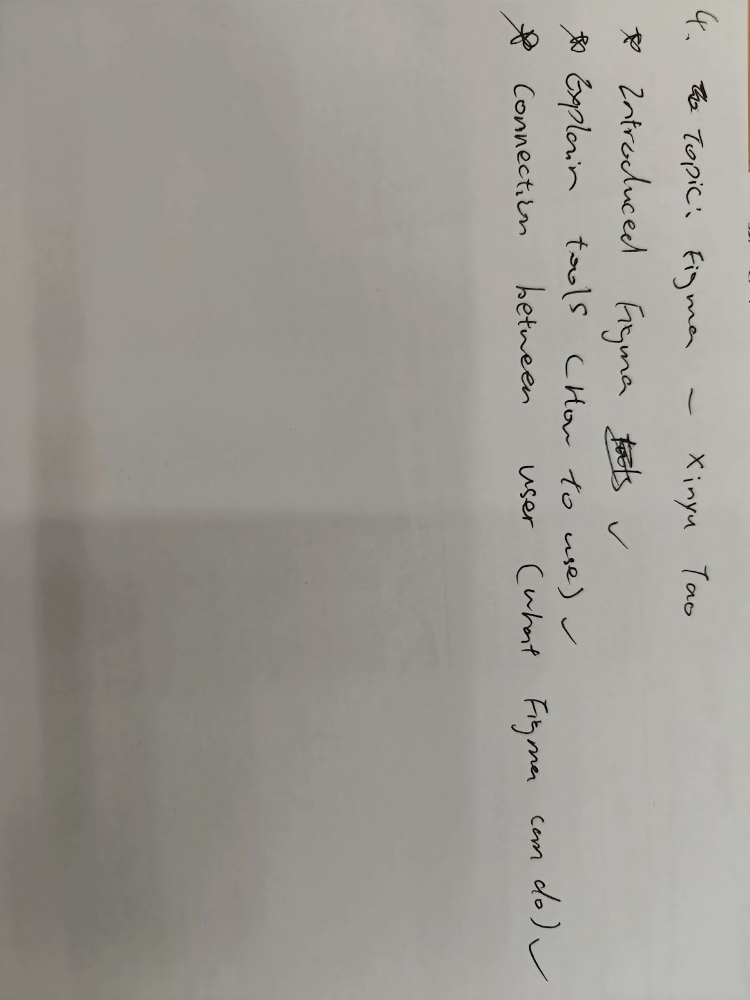
Conclusion
The most important thing I learned this week is that creating a tech demo isn’t just about showcasing a tool. It’s also about demonstrating my relationship with that tool, my current level of understanding, and what knowledge I believe is worth sharing with others.
I’ve also learned that my position as a learner isn’t a weakness. In some ways, it’s actually helpful, because it makes it easier for me to consider what beginners need and what kind of explanations are most accessible. At the same time, however, I need to be careful not to let this position as a learner limit my ability to make more precise choices regarding focus and depth.
By comparing my presentation with others’, I realized that a helpful demo typically has a clear purpose, a well-defined core focus, and examples that directly support that focus. These are areas I hope to continue improving in my future presentations and design communication. Based on the feedback I received from this demo, I’ve also tentatively decided on a direction for my future work: moving toward 3D modeling and animation.
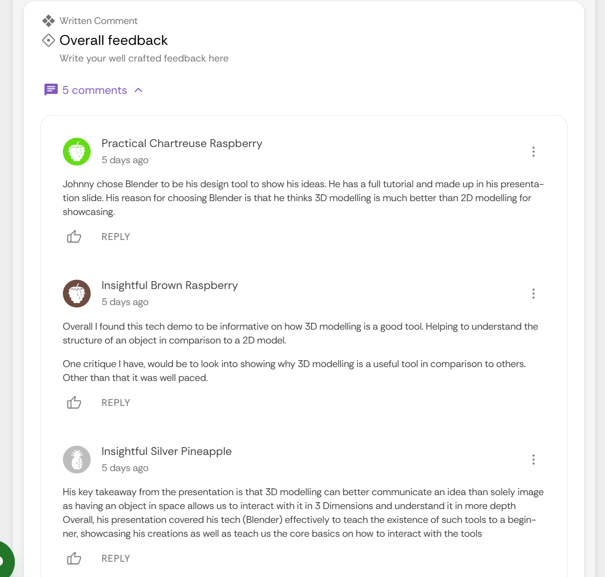
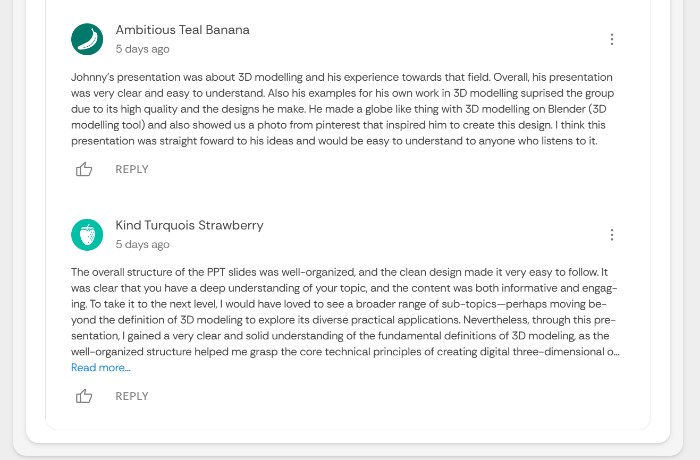